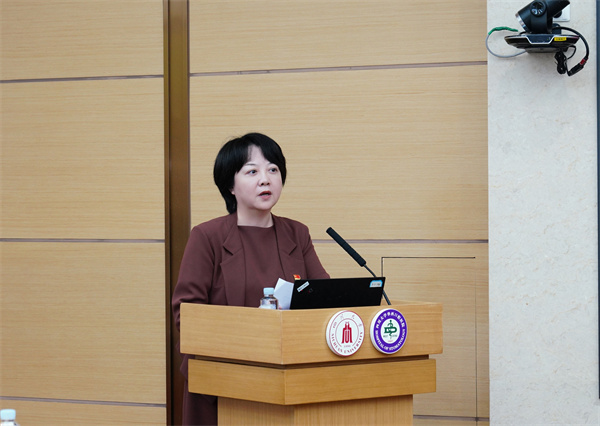

学院通知 · 教学通知
我院举办“‘三化’建设促一流，履职尽责担使命”党支部纪检委员业务培训
发布时间：2025-09-23
9月18日，我院在教学楼二楼华西厅举办“‘三化’建设促一流，履职尽责担使命”党支部纪检委员业务培训。本次培训邀请到四川大学纪委副书记唐世红同志作专题辅导报告。院党委书记谭静同志，党委副书记、纪委书记沈颉飞同志，纪委委员、相关部门负责人、专职纪检干部和全体党支部纪检委员出席培训。培训分别由院党委副书记、纪委书记沈颉飞同志和纪委办公室主任王剑同志主持。 院党委书记谭静同志首先作培训动员讲话并提出要求，强调全体党支部纪检委员要自觉肩负起职责使命，结合党支部工作实际，做好政策落地的“宣传员”、风险防控的“监督员”和民情民意的“信息员”，同时以学赋能，提高履职尽责能力水平，深入推进“三个一流”建设，切实将培训成效转化为加快学科建设步伐的实际行动。 四川大学纪委副书记唐世红同志以《带头改作风守纪律 不断提升履职能力》为题，结合自身工作经历和学校纪检监察业务实践，讲授了加强作风建设、纪法学习和日常履职的具体要求，并通过典型案例强化警示教育，引导参训学员树牢纪律规矩意识，巩固拓展医院风清气正的发展环境。 院党委副书记、纪委书记沈颉飞同志以《纪检工作业务知识应知应会》为题，介绍了纪委的职能职责、当前纪检工作的形势政策和目标任务，并进行了通识培训和履职提醒，要求学员们做到自身正、自身硬、自身廉，以纪律建设护航事业高质量发展。 纪委办公室主任王剑同志以《党支部纪检委员的主要职责与履职实务》为题，结合教研医管工作实际，讲解了党支部纪检委员的基本职责、履职路径和工作方法。 此次培训旨在贯彻落实“纪检监察工作规范化法治化正规化建设年”行动要求，提升党支部纪检委员的业务水平和履职能力，为事业发展提供坚强纪律保障。 标签：
